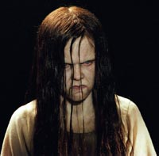

Samara Morgan
 De: La Frikipedia, la enciclopedia extremadamente seria.
De: La Frikipedia, la enciclopedia extremadamente seria.
 Samara Morgan, de primera comunión
Samara Morgan es una perra que se cree que saliendo de la tele y practicando la pederastia con sus víctimas puede dar miedo. Es la protagonista de "The ring", el aro o como le digan en tu país. Hay rumores de que es hermana de Emily Rose y prima de la niña del exorcista.
Supuestamente cuando era pequeña no dormía, así que sus papis la mandaron al manicomio, el problema fue que hasta los psicólogos se volvieron locos viéndola pajearse asi que la mandaron de vuelta a su casa. Como esto es una supuesta peli de terror la tía no podía ser feliz, así que su lindo papa le puso una bolsa en la cabeza y la tiro a un poso.
El problema fue que dios-sabrá-como la tía gravo en un vídeo los días que tardo en morir y como murio y si vez el vídeo te viola mata en siete días.
Los vídeos de Samara
En el vídeo de esta chava te muestra como murió o algo por el estilo y luego de eso te llama diciéndote que te va a matar en siete días. Pasados los siete días la cabrona sale de la tele y supuestamente te mata de la risa
El primer vídeo(tan tan taaaaaan)
En el primer vídeo,que hizo una amiga de la niña del exorcista cuando Samara tenía 11 años,se ve a Samara lavando la ropa,después llega su prima(la niña del exorcista) y se pone a apalearla y tirarle lombrices en la cara.Dura 15 minutos(10 de ellos dura la paliza de la prima de Samara a Samara)
Vídeo 2
Es mucho más largo y contiene 27 escenas más cuatro escenas eliminadas.
Aquí salen todas las escenas en orden cronológico(en el orden en que aparecen,coño)

Si miras el video, una semana después se te aparece (y será lo último que verás...)
- Aro blanco que brilla mucho: Simboliza a Samara viendo las estrellas cuando su prima la apalea.
- Estática: simboliza cuando la niña del exorcista violaba a Samara.
- Sangre en el agua: es la sangre de Samara en una de las jugarretas que le gastaba su prima
- Una silla: La silla favorita de Samara,antes de que su prima la torturase con ella.
- Peine a través del pelo: no es un peine,son varias ardillas que la prima de Samara le puso un día en el pelo.
- Espejo con Samara y su madre: simboliza cuando Samara llegaba hecha una mierda ante su madre.
- Un clavo: Simboliza cuando La niña del exorcista obligó a Samara a clavarse agujas en los dedos.
- Richard mirando a través de la Ventana: Es el padre de Samara,que solía grabar a las niñas,para subirlas a Youtube.
- Un Acantilado con una Mosca cerca de él: Es un acantilado en el que la prima arrojó una vez a Samara
- Una Boca que Vomita puntas de prueba, intestinos o alimento: Simboliza cuando la niña del exorcista obligó a Samara a comerse una masa de pelo e intestinos de caballo.
- Cara que Lucha contra el Plástico Negro: Simboliza cuando la prima de Samara la obligó a meter la cabeza en una bolsa de basura.
- Árbol Llameante: Es el árbol favorito de Samara,cuando su prima le prendió fuego
- Luna en medialuna: Simboliza a Samara,a punto de quedarse en coma(al final se salvo,para disgusto suyo)
- Dedo empujado hacia abajo en un Clavo: Simboliza cuando la prima de Samara,después de hacerlo con las uñas,la obligó a destrozarse los dedos.
- Gusanos que dan Vuelta en la Gente en un mar de fuego: Simboliza lo que piensa de su prima
- Gente Nadando o Flotando: Simboliza cuando la prima de Samara le hizo una ahogadilla cuando Samara estaba a punto de ganar la competición de natación escolar.
- Un Ciempiés, una Silla y una Tabla o Mesa con un vaso de agua: Simboliza cuando Samara estudiaba y su prima la asustaba con ciempiés,arañas o serpientes.
- Cordero con solamente tres Piernas que va dentro del Granero: Era el cordero de Samara,cuando la niña del exorcista le hizo una "visita"
- Ojo de Cordero: El cordero de Samara,antes de que su prima le cortase una pierna.
- Dedos Separados en una Caja: Simboliza cuando la prima de Samara la obligó a cortarse siete dedos y esconderlos en el tabaco de su padre
- Anna ve al espectador. En realidad,está mirando como viene Samara hecha una mierda.
- Ventana sin Richard: Cuando el padre no estaba en la ventana,es que estaba subiendo los vídeos a Youtube
- Silla que Gira: Simboliza cuando la prima de Samara la colgó boca-abajo atada a la silla durante cinco horas.
- Escalera: La escalera del cuarto de Samara antes de que la prima la destruyera.
- Caballos Muertos: No son caballos,es el cadáver de Samara,cuando su prima la mató la primera vez.
- Samara Salta: Simboliza cuando la prima de Samara la tiró al mar.
- El derrumbe de la Escalera: Simboliza cuando la prima de Samara, destruía la escalera.
- Aro con un Lado más Grueso que el otro: Samara despertándose y volviendo a recibir otra ostia.
- El Pozo: Simboliza cuando la niña del exorcista tiró a Samara por el pozo y convenció a la madre de Samara para que arrojase al pozo caca de caballo,matando a Samara por segunda vez.
Escenas eliminadas del vídeo
Son cuatro escenas que fueron eliminadas del vídeo sin razón aparente.
- Un tren estampándose contra una muralla: Simboliza lo que Samara piensa de su padre.
- Samara mirando con cara de loca: Simboliza a Samara imitando a su prima
- Samara saliendo del pozo: simboliza lo que a Samara le hubiera gustado que pasara
- La cara de Samara deshaciéndose: simboliza lo que le pasó a Samara al estar 49 días en el pozo cubierta de mierda de caballo
Autor(es):
- Mad Max
- Kevrochi
- Kitsune-white
- Piruru-angolcrazy
- Miyako friki
- Shadowmura
- Generibot
Frikipedia 2005-2016, Licencia
GFDL 1.2 - Extraído por FrikiLeaks